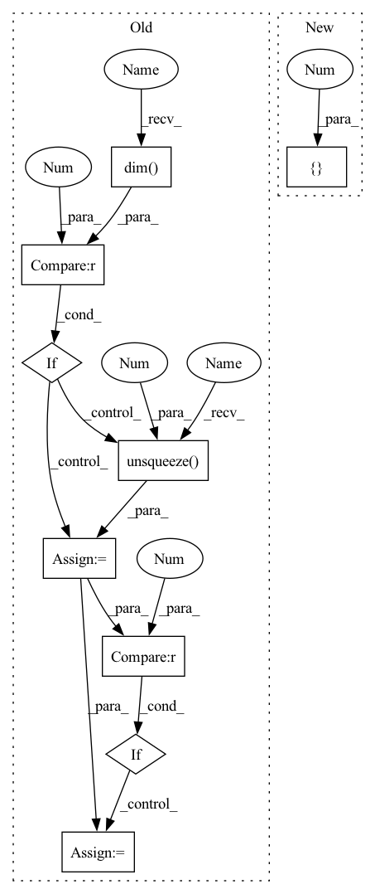

Pattern ID :22866
Before Change
)
z_ = z - 1 / (1 + inner) * (lin + u * self.b)
log_det = -torch.log(torch.abs(1 + torch.sum(self.w * u)))
if log_det .dim() == 0 :
log_det = log_det.unsqueeze(0 )
if log_det.dim() == 1 :
log_det = log_det.unsqueeze(1)
return z_, log_det
After Change
inner = torch.sum(self.w * self.u)
u = self.u + (torch.log(1 + torch.exp(inner)) - 1 - inner) \
* self.w / torch.sum(self.w ** 2)
dims = [-1 ] + (u.dim() - 1) * [1]
u = a.reshape(*dims) * u
inner_ = torch.sum(self.w * u, list(range(1, self.w.dim())))
z_ = z - u * (lin / (1 + inner_)).reshape(*dims)In pattern: SUPERPATTERN
Frequency: 3
Non-data size: 9
Instances Fragment ID: 72683185
Project Name: vincentstimper/normalizing-flows
Commit Name: 2e3c8bac852694af68f42ff283b2d834aa19bdb9
Time: 2022-12-19
Author: vincent.stimper@gmail.com
File Name: normflows/flows/planar.py
M Class Name: Planar
N Class Name: Planar
M Method Name: inverse(2)
N Method Name: inverse(2)
M Parent Class: Flow
N Parent Class: Flow
M File Name: normflows/flows/planar.py
N File Name: normflows/flows/planar.py
M Start Line: 75
M End Line: 92
N Start Line: 69
N End Line: 80
Before Change
/ torch.sum(self.w**2)
)
z_ = z - 1 / (1 + inner) * (lin + u * self.b)
log_det = -torch.log(torch.abs(1 + torch.sum(self.w * u)))
if log_det.dim() == 0 :
log_det = log_det.unsqueeze(0 )
if log_det.dim() == 1 :
log_det = log_det.unsqueeze(1)
return z_, log_det
After Change
inner = torch.sum(self.w * self.u)
u = self.u + (torch.log(1 + torch.exp(inner)) - 1 - inner) \
* self.w / torch.sum(self.w ** 2)
dims = [-1] + (u.dim() - 1) * [1 ]
u = a.reshape(*dims) * u
inner_ = torch.sum(self.w * u, list(range(1, self.w.dim())))
z_ = z - u * (lin / (1 + inner_)).reshape(*dims) Fragment ID: 72683184
Project Name: vincentstimper/normalizing-flows
Commit Name: 2e3c8bac852694af68f42ff283b2d834aa19bdb9
Time: 2022-12-19
Author: vincent.stimper@gmail.com
File Name: normflows/flows/planar.py
M Class Name: Planar
N Class Name: Planar
M Method Name: inverse(2)
N Method Name: inverse(2)
M Parent Class: Flow
N Parent Class: Flow
M File Name: normflows/flows/planar.py
N File Name: normflows/flows/planar.py
M Start Line: 75
M End Line: 92
N Start Line: 69
N End Line: 80
Before Change
/ torch.sum(self.w**2)
)
z_ = z - 1 / (1 + inner) * (lin + u * self.b)
log_det = -torch.log(torch.abs(1 + torch.sum(self.w * u)))
if log_det.dim() == 0 :
log_det = log_det.unsqueeze(0 )
if log_det.dim() == 1 :
log_det = log_det.unsqueeze(1)
return z_, log_det
After Change
inner = torch.sum(self.w * self.u)
u = self.u + (torch.log(1 + torch.exp(inner)) - 1 - inner) \
* self.w / torch.sum(self.w ** 2)
dims = [-1 ] + (u.dim() - 1) * [1]
u = a.reshape(*dims) * u
inner_ = torch.sum(self.w * u, list(range(1, self.w.dim())))
z_ = z - u * (lin / (1 + inner_)).reshape(*dims) Fragment ID: 72683186
Project Name: vincentstimper/normalizing-flows
Commit Name: a889154fde455dbf8adddd8da2f0b786a0fe0d8e
Time: 2022-11-09
Author: vincent.stimper@gmail.com
File Name: normflows/flows/planar.py
M Class Name: Planar
N Class Name: Planar
M Method Name: inverse(2)
N Method Name: inverse(2)
M Parent Class: Flow
N Parent Class: Flow
M File Name: normflows/flows/planar.py
N File Name: normflows/flows/planar.py
M Start Line: 75
M End Line: 92
N Start Line: 68
N End Line: 79
Before Change
self._c = np.zeros((2, 1, 64)).astype("float32")
def __call__(self, x, sr: int):
if x.dim() == 1 :
x = x.unsqueeze(0 )
if x.dim() > 2 :
raise ValueError(f"Too many dimensions for input audio chunk {x.dim()}")
if sr != 16000 and (sr % 16000 == 0):
step = sr // 16000
x = x[::step]
sr = 16000
if x.shape[0] > 1:After Change
if (self._last_batch_size) and (self._last_batch_size != batch_size):
self.reset_states(batch_size)
if sr in [ 8000, 16000 ]:
ort_inputs = {"input": x.numpy(), "h": self._h, "c": self._c, "sr": np.array(sr)}
ort_outs = self.session.run(None, ort_inputs)
out, self._h, self._c = ort_outs Fragment ID: 72683181
Project Name: snakers4/silero-vad
Commit Name: 081e6b9886f2173f722baf3cc5001583722b1eb8
Time: 2022-10-26
Author: dvoronin322@gmail.com
File Name: utils_vad.py
M Class Name: OnnxWrapper
N Class Name: OnnxWrapper
M Method Name: __call__(3)
N Method Name: __call__(3)
M Parent Class:
N Parent Class:
M File Name: utils_vad.py
N File Name: utils_vad.py
M Start Line: 30
M End Line: 53
N Start Line: 53
N End Line: 73